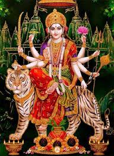

Enjoy The Moments....
-

- 
Navratri, (Sanskrit: �nine nights�)in full Sharad Navratri; Navratri also spelled Navaratri; also called Durga Puja, in Hinduism, major festival held in honour of the divine feminine. ... In some parts of India, Dussehra is considered a focal point of the festival, making it effectively span
Navratri is celebrated among Hindus to welcome Goddess Durga in the Gregorian months of September and October. ... Apart from Goddess Durga in the east and Lord Rama in the north and west, various the goddesses such as Saraswati and Lakshmi, gods such as Ganesha, Kartikeya, Shiva and Krishna are regionally revered.
Celebrated over a period of nine days, Navratri is observed to worship the nine avatars or forms of Goddess Durga namely Shailputri, Brahmacharini, Chandraghanta, Khushmanda, Skandamata, Kaalratri, Katyayani, Mahagauri and Siddhidatri.